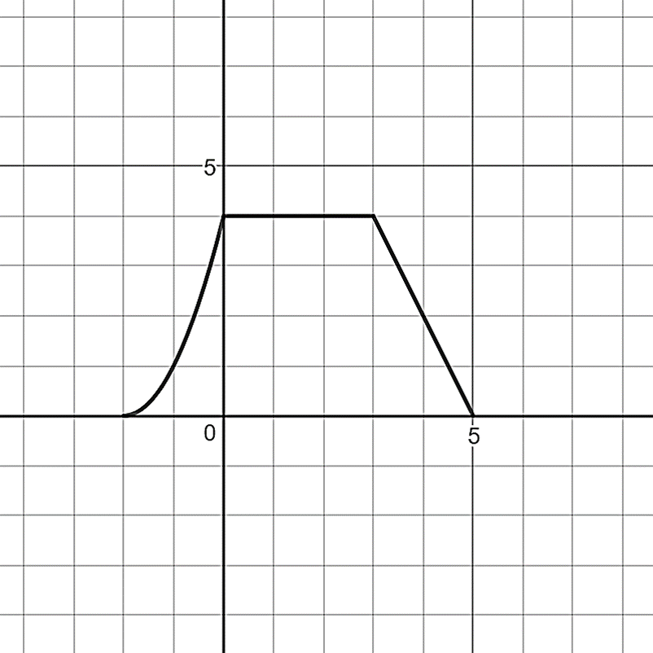

Skip to main content
Contents Dark Mode Prev Up Next \(
\newcommand{\lt}{<}
\newcommand{\gt}{>}
\newcommand{\amp}{&}
\definecolor{fillinmathshade}{gray}{0.9}
\newcommand{\fillinmath}[1]{\mathchoice{\colorbox{fillinmathshade}{$\displaystyle \phantom{\,#1\,}$}}{\colorbox{fillinmathshade}{$\textstyle \phantom{\,#1\,}$}}{\colorbox{fillinmathshade}{$\scriptstyle \phantom{\,#1\,}$}}{\colorbox{fillinmathshade}{$\scriptscriptstyle\phantom{\,#1\,}$}}}
\)
Subsection 2.3 The Unit Circle and Trigonometric Functions Exercises
For each triangle below, find all missing sides and angles.
Figure 2.3.14.
Figure 2.3.15.
Refer to the function
\(Q(x)=\frac{(x-4)(x+1)}{(x+2)(x+6)}\text{.}\)
What is the domain of
\(Q\text{?}\)
Graph
\(Q(x)\) so that the important features are visible, and label them.
Describe the interval(s) on which
\(Q\) is increasing.
Find the average rate of change of
\(Q\) on the interval
\(-1 \leq x \leq 1\text{.}\)
Find the average rate of change of
\(Q\) on the interval
\(1 \leq x \leq 10\text{.}\)
Find an interval on which the average rate of change of
\(P\) is 0.
Table 2.3.16. Table of values for \(a(x)\)
Table 2.3.17. Table of values for \(b(x)\)
Decide which type of function (linear, quadratic, exponential) best fits the data for
\(a(x)\text{.}\) Explain your reasoning.
Write a function equation for
\(a(x)\text{.}\)
Solve the equation
\(a(x)=12\text{.}\)
Using the function equation you wrote for
\(a(x)\text{,}\) solve the inequality
\(a(x) \geq 12\text{.}\)
Using the function equation you wrote for
\(a(x)\text{,}\) solve
\(a(x)=48\text{.}\)
Find the inverse function
\(a^{-1}\text{.}\)
Decide which type of function (linear, quadratic, exponential) best fits the data for
\(b(x)\text{.}\) Explain your reasoning.
Write a function equation for
\(b(x)\text{.}\)
Solve the equation
\(b(x)=12\text{.}\)
Using the function equation you wrote for
\(a(x)\text{,}\) solve
\(b(x) < 12\text{.}\)
Using the function equation you wrote for
\(b(x)\text{,}\) solve
\(b(x)=48\text{.}\)
Find the inverse function
\(b^{-1}\text{.}\)
Solve the following equations.
\(\displaystyle 2^{x+1} \cdot 3^{x+2} = 23328\)
\(\displaystyle \sqrt{x+1} \sqrt{x-39}=21\)
\(\displaystyle \frac{1}{2}\ln (t+3) +\frac{1}{2} \ln (t-4) = \ln (12)\)
Let
\(a(x)=3^x\text{,}\) \(b(x)=3^{-x}\text{,}\) \(c(x)=\frac{1}{x^3}\text{.}\) Write a function equation for each function below, using the exponent rules to simplify the equation and write without negative exponents.
\(\displaystyle f(x)=(c \circ b)(x)\)
\(\displaystyle k(x)=c(x) \cdot a(x)\)
\(\displaystyle g(x)=(c(x))^{-2}\)
\(\displaystyle h(x)=2 (b(x))^2\)
\(\displaystyle j(x)=a(x)\cdot b(x)\)
Suppose that
\(\sin \alpha = \frac{1}{2}\text{.}\) Use your work in the “Important Angles" section to determine possible value(s) of
\(\alpha\text{,}\) where
\(0 \leq \alpha < 2\pi\text{.}\)
Suppose that
\(\cos \beta = \frac{\sqrt{2}}{2}\text{.}\) Use your work in the “Important Angles" section to determine possible value(s) of
\(\beta\text{,}\) where
\(0 \leq \beta < 2\pi\text{.}\)
A carousel has a diameter of 44 feet. The ride turns counterclockwise.
Draw a diagram of the carousel in the
\(xy\) -plane with the center at the origin.
What is the distance traveled by a rider along the outer rim of the carousel as she travels through an angle of
\(\frac{\pi}{3}\text{?}\) If the rider began at the point
\((22,0)\text{,}\) what are the rider’s coordinates after traveling through an angle of
\(\frac{\pi}{3}\text{?}\)
A Ferris wheel has a diameter of 30 feet, and is mounted so that the bottom of the wheel is 4 feet off the ground. The ride turns counterclockwise as seen by the operator.
Draw a diagram of the Ferris wheel in the
\(xy\) -plane.
Write an equation to describe the points on the Ferris wheel.
Find the distance traveled by someone riding through one complete turn of the wheel.
Find the distance traveled by someone ridlng from the 7 o’clock position to the 11 o’clock position.
The wheel makes 1 turn every 25 seconds. A rider boards the wheel and travels a distance of 50 feet. How long did this take?
What are the coordinates of a rider when she is in the 11 o’clock position on the wheel?
What is the height above ground of a rider when her position is at an angle of
\(\frac{\pi}{4}\) with the horizontal?
\(\displaystyle \frac{5}{n^2}-\frac{2n-4}{5n}=\frac{n-6}{n^2}\)
\(\displaystyle 3r+3-\frac{5}{r}=\frac{1}{r}\)
\(\displaystyle \frac{n-4}{n}=\frac{n+5}{n^2-4n}=\frac{2n^2-9n-5}{n^2-4n}\)
Let
\(m(x)=\sqrt[5]{x}\text{,}\) \(n(x)=x^2\text{,}\) and
\(p(x)=\frac{1}{x^4}\text{.}\)
Write
\(m(n(x))\) as a function of
\(x\) with a single exponent.
Write
\(m(n(x)p(x))\) as a function of
\(x\) with a single exponent.
The graph of
\(f(x)\) is shown below. Let
\(g(x)=f(2(x+1))-3\text{.}\) 
Figure 2.3.18.
Describe the transformations that would be required to transform
\(f(x)\) in to
\(g(x)\text{.}\)
On the same set of axes, sketch the graph of
\(g(x)\text{.}\)
What are the domain and range of
\(f(x)\text{.}\)
What are the domain and range of
\(g(x)\text{.}\)